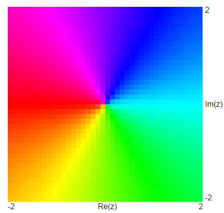
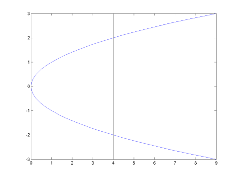

Table of Contents
Graphing Complex Functions
Launch the Complex Function
Grapher
Graphing in 4 Dimensions
Graphing a complex function is difficult because you need 2
(real) dimensions for the domain and 2 (real) dimensions for the range - a
total of 4 dimensions. In the Complex Function Grapher app, the domain of
a complex function is
graphed on the base plane. The range is graphed using polar
coordinates. The modulus (magnitude) of the complex function is graphed on
the vertical axis. The argument (angle) is graphed by using different
colors - light blue for positive real, dark blue (shading to purple) for
positive imaginary, red for negative real, and yellow-green for negative
imaginary as shown at the right.

This allows four dimensions to be represented in three spatial
dimensions, which are then projected onto a two-dimensional screen using a
simple orthogonal projection either from the side or the top, depending on
the view selected.
If you are color-blind: our experience is that most
color-blind students can recognize enough to complete the assignment without
much trouble (particularly working with your partners). If you do have trouble,
let your lab instructor know and we will make special arrangements.
In class we discussed connections between exp(z), sin(z), and cos(z) that
could be deduced from their Taylor series. This week we will use the
connections between complex exponentials and pairs of sines and cosines to
find real solutions to linear constant coefficient differential
equations. In this studio we will look at the connections between
these geometrically. We will also look at some other ideas about complex
functions and their graphs, which will be helpful in some future courses
(particularly if you study control theory).
Connections Between Exponential And Trigonometric Functions
- Graph exp(pi z). According to Euler's formula, we should expect
exp(pi z) = cos(pi z/i) + i sin(pi z/i) to be periodic, since
cos(z) and sin(z) are periodic. How does the periodicity show up in the
graph? What is the period of exp(pi z)?
The hyperbolic cosine and hyperbolic sine are defined as
cosh(z) = (exp(z)+exp(-z))/2 and
sinh(z) = (exp(z)-exp(-z))/2. When these functions are
introduced in calculus 2, it is often unclear why they are called a sine
and cosine. The next two problems address this issue.
- Graph cos(pi z) and cosh(pi z). How are the two graphs
related?
- Graph i*sin(pi z) and sinh(i*pi z). How are the two graphs
related? What is the relationship between i*sin(pi z) and
sinh(i*pi z)?
The Square Root Function And The Notion Of A Riemann Surface
In the ordinary
two-dimensional graph of y2 = x,
we don't have y as a function of x since the graph fails the
vertical line test, that is a given value of x, say x
= 4, will give rise to two different values of y, both
y = 2 and y = -2.

We deal with
this by defining the square root function to always give the
positive square root. We can also speak of the two branches of the square
root function, the positive square root and the negative square root,
which together make up the graph of
y2 = x. Of course, as a real-valued
function, the square root function is only defined for x
>= 0. But the point of complex numbers is that you can now take
square roots of negative numbers, indeed of any number. In the next two
problems we'll try to develop a sense of the two branches of sqrt(z) for
the complex plane.
- Graph sqrt(z) and -sqrt(z). Observe the "branch cut" along the
negative real axis. Explain why can't we define a branch of square root
which
is continuous over the whole plane? Hint: The complex numbers
eiθ trace out a circle around the origin of radius 1
starting and ending at -1 as θ varies from -π to π. What are
the values of sqrt(eiθ) at the beginning and end of the
circle?
- We could build a single graph of the real variables
y2 = x by stitching the two branches
of the square root functions together. How could you stitch the two
branches of the square root functions together to get a single graph for
the complex case? Hint: The stitching will give you a figure that
would have to intersect itself in three dimensions, but since complex
graphs live in 4 dimensions there is the extra room needed to
stitch things together.
The Argument Principle
The last topic we will consider are some tricks for finding zeros and
poles of complex functions. These tricks can later be used to
recognize whether certain systems are stable or unstable. They can also
lead to a proof of the fundamental theorem of algebra (this is a math
class - you should expect us to talk some about theorems and proofs :)
Look at the following functions in the complex function grapher. The
Top View will be most useful, but looking at a couple of the examples
that have poles using the Side View will help you understand why we
use the word "poles" for these points.
- f(z) = z
- f(z) = z^2
- f(z) = z^2+1
- f(z) = 1/z
- f(z) = 1/z^2
- f(z) = (z^2 + 1)/z
- How can you recognize the zeros and poles of the functions from just
looking at the colors you see in the Top View?
- How can you distinguish a single root from a double root or a single
pole from a double pole?
- How can you distinguish the zeros from the poles by looking at the
colors you see in the Top View?
Once you learn to recognize zeros and poles, you can look for patterns in
how the colors work.
- Fill in the following table. Count roots and poles of the following
functions with multiplicity (i.e. a double root counts as two). Also
count how many times you cycle through the rainbow as you move around the
edge of the graph window. When counting the rainbows around the edge of
the graph, count rainbows that move counterclockwise as you go from red to
yellow to green to blue to violet as positive and rainbows that go
clockwise as negative.
| Function | # Roots | # Poles |
Rainbows
at the edge |
|---|
| (z+1)(z-1)^2 |
| | |
| (z^2+z)/(z-1) |
| | |
| (z^2-2)z^2/(z^2+1) |
| | |
- Look at the values you found in the table above. Can you find a
pattern for the rainbows around the edge in terms of the # of roots and
the # of poles? This pattern is called the Argument Principle
(or in some books, the Principle of the Argument).
The Fundamental Theorem of Algebra
We can use the principle of the argument to justify the fundamental
theorem of algebra, which says any polynomial of degree n has n roots
(counted with multiplicity) in the complex plane. Suppose we have a
polynomial. For very large values of z, the leading term of the polynomial
will dominate the other terms and the graph of the polynomial will look
like the graph of its leading term for a large domain.
Because of this, we can conclude that if we take a large
enough window, the number of rainbows around the edge for a polynomial of
degree n is the same as the number of rainbows around the edge for z^n,
that is to say, n rainbows.
Now from the principle of the argument, that means
the (# roots) - (# poles) of the polynomial is n. But a
polynomial has no poles
(since it has no denominator), so the polynomial must have exactly n roots
(including complex roots and counting multiplicity). And this is exactly
the Fundamental Theorem of Algebra. In Math 630, you can learn how to
prove these patterns must always hold, but just by experimentation I hope
you can see these patterns hold, and then understand why these patterns
imply the Fundamental Theorem of Algebra is true. In a later chapter we
will discover that knowing where the poles are of the "Laplace transform" of
the solution of a differential equation tells us a great deal about the
stability of the system being modeled, and techniques like this can help
us determine where poles are located in the complex plane.
©1994-2026 Andrew G. Bennett